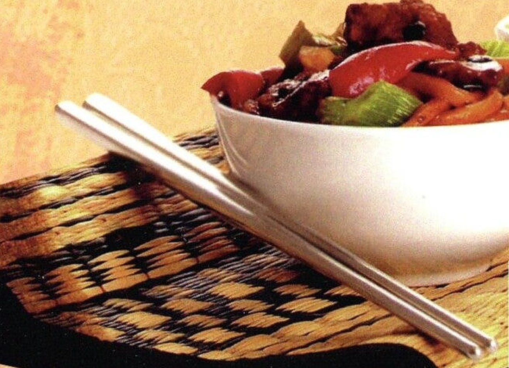

Kwaliteit en kwantiteit voor een goede prijs
Chinese, Indische en Surinaamse gerechten om af te halen, of we bezorgen in heel Dordrecht. Van de Willem Marisstraat, elke dag behalve woensdag.
Zo bestelt u bij Rose Garden
- Kies uit de menukaartSoepen, nasi- en bamischotels, Surinaamse en Antilliaanse gerechten, rijsttafels en specialiteiten van het huis. Bekijk de kaart
- Bel ons op 078 613 73 50Geef uw bestelling door en zeg of u het komt halen of dat we het bezorgen.
- Afhalen of thuisbezorgdHaal het op aan de Willem Marisstraat 8, of we brengen het naar u toe, in heel Dordrecht.
Wij bezorgen in heel Dordrecht
Elke dag behalve woensdag, ook op feestdagen.
- Afhalen14:00 – 20:30
- Bezorgen16:00 – 20:30
Bij bezorgen is er geen pin aanwezig: u betaalt contant. Heeft u een allergie? Meld het ons bij uw bestelling.
Bel om te bestellenKerstmenu voor 2 à 3 personen
Met de kerstdagen gewoon thuis aan tafel. Twee kerstmenu's, allebei met soep vooraf en kroepoek, en keuze uit twee porties nasi, bami of witte rijst.
Met kerst is het druk: bel ons op tijd om uw kerstmenu te bestellen.
Heeft u iets te vieren?
Bestel bij ons een buffet met warmhoudschalen. Geheel verzorgd en gratis thuisbezorgd, vanaf 10 personen.
Chinees Specialiteiten Restaurant Rose Garden
Aan de Willem Marisstraat koken we Chinees, Indisch en Surinaams. Van een kom kippensoep tot Peking eend en Wu Xing, en van nasi rames tot moksie metie en saté cu batata.
Ook voor kinderen staat er een menu op de kaart, en voor uw feest verzorgen we catering.
Bestellen en openingstijden
Elke dag open van 14:00 tot 20:30, behalve op woensdag (op feestdagen zijn we wel open).
Bel om te bestellen
Geef uw bestelling telefonisch door, dan staat hij op tijd klaar of komt hij naar u toe.
Openingstijden
| Maandag | 14:00 – 20:30 |
| Dinsdag | 14:00 – 20:30 |
| Woensdag | Gesloten |
| Donderdag | 14:00 – 20:30 |
| Vrijdag | 14:00 – 20:30 |
| Zaterdag | 14:00 – 20:30 |
| Zondag | 14:00 – 20:30 |
Bezorgen van 16:00 tot 20:30 uur, in heel Dordrecht. Bij bezorgen alleen contant betalen. Op feestdagen ook op woensdag open.